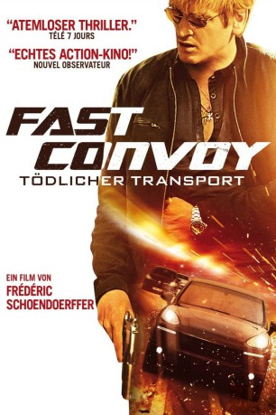

IMDB-Wertung: 5.4 / 10
IMDB-Wertung: 5.4 / 10  Metascore:
Metascore: 
A "go fast" convoy shipping a ton of cannabis Malaga in southern Spain is disrupted following a shoot out that results in the kidnapping of a tourist.
 IMDB-Wertung: 5.4 / 10 Metascore:
A "go fast" convoy shipping a ton of cannabis Malaga in southern Spain is disrupted following a shoot out that results in the kidnapping of a tourist.
Jahr: 2016
Dauer: 102 Minuten
FSK: 16
Land: Frankreich Studio: Ascot Elite Entertainment GroupTonspuren:
Untertitel:
Auflösung: 1080p (1920x808) Größe: 4782 MB
Genre: Thriller
Regisseur: Frédéric Schoendoerffer
Drehbuch: Ink Factory, The
Soundtrack:
Darsteller:
 Benoît Magimel als Alex
Benoît Magimel als Alex Reem Kherici als Nadia
Reem Kherici als Nadia Laurent Demianoff als Ghost-driver
Laurent Demianoff als Ghost-driver Alain Figlarz als Omar
Alain Figlarz als OmarDatei: X:\2016(A-F)\Fast Convoy (2016, FSK16, 1920x808).mkv seit 04.07.2016
Festplatte: HD 2016(A-Z)
 Es gibt insgesamt 147 Filme in der Gruppe '2016(A-F)'
Es gibt insgesamt 147 Filme in der Gruppe '2016(A-F)'